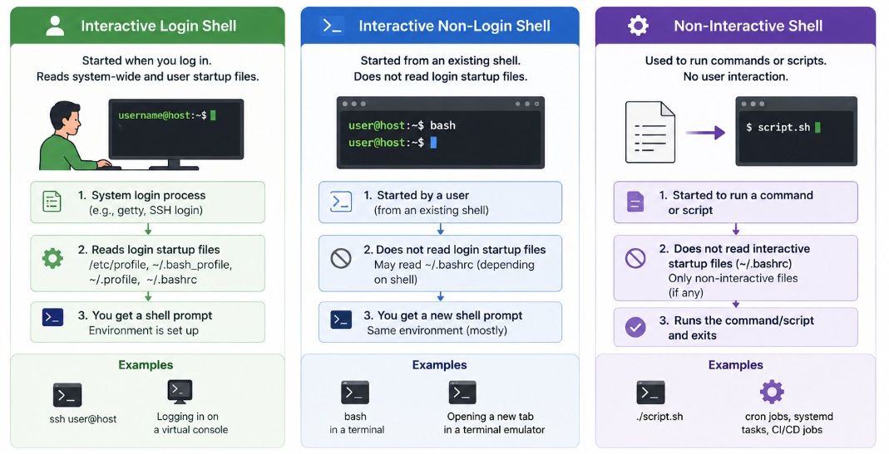

The previous section said dotfiles hold your shell's settings. This section answers the question that actually trips people up: which of those files does Bash read? The answer is not "all of them, always". Bash behaves differently depending on how it was started, and choosing the wrong file is the single most common reason a setting appears to be ignored.
The GNU Bash manual distinguishes between interactive login shells, interactive non-login shells, and non-interactive shells. Each case reads a different set of startup files:
/etc/profile first, then the first readable file among ~/.bash_profile, ~/.bash_login, and ~/.profile.~/.bashrc.BASH_ENV environment variable is set, in which case it runs the file that variable names. BASH_ENV is not set on a normal system, so in practice scripts start with no startup file.That last case surprises people often enough to be worth stating twice: a script does not inherit the customisations you have set up in your ~/.bashrc. If something works when you type it yourself but fails inside a script, this is one of the first things to check.

A practical example helps. Suppose you open a terminal emulator on Ubuntu. That often gives you an interactive non-login shell, so your prompt customisations and your aliases — short names you define for longer commands, covered properly in section 7.5 — usually come from ~/.bashrc. By contrast, if you connect with SSH in a way that starts a login shell, Bash may read /etc/profile and then ~/.bash_profile or ~/.profile. That means ~/.bash_profile is often used for login-specific setup, while ~/.bashrc is often used for interactive shell behaviour.
You do not have to guess which case you are in. Three small checks will tell you:
$ echo "$0"
$ shopt login_shell
$ echo "$-"echo "$0" shows how the shell was invoked. echo "$-" lists the shell's current option flags, and includes i if the shell is interactive.
The middle one introduces a command worth knowing in its own right. shopt is Bash's command for checking and toggling optional shell behaviours. Used with just an option name it reports whether that option is currently on or off; shopt -s name switches an option on, and shopt -u name switches it off. So shopt login_shell reports whether the current Bash session is a login shell. You will meet shopt again in section 7.6, where it controls how command history is saved.
bash --login). Compare the output: login_shell should flip from off to on, which tells you a different set of startup files was read.
A very common beginner mistake is putting everything into one file without thinking about when that file is read. For example, say you define an alias — a short name for a longer command, such as alias ll='ls -lah' so that typing ll runs ls -lah — and you put it only in ~/.profile. It will not appear in a normal non-login terminal, because that terminal only reads ~/.bashrc. The mistake also runs the other way. Putting something interactive — an echo "Welcome back!", say — into a login file can break automated tools that log in over SSH and expect nothing but the output they asked for. A safer mental model is:
~/.bashrc for interactive shell customisations~/.bash_profile / ~/.profile for login-time setupBASH_ENV only when you deliberately need a script to run setup first — normally you leave it unset~/.profile alone will not appear in a terminal that only reads ~/.bashrc.
source commandThat mental model leaves an obvious problem. If your aliases live in ~/.bashrc, and a login shell reads ~/.bash_profile instead, then logging in over SSH gives you a shell without any of your customisations. The standard fix is to have the login file read the interactive one. The Bash manual itself shows the pattern:
# ~/.bash_profile
if [ -f ~/.bashrc ]; then
. ~/.bashrc
fiThe leading . here is the source command (also written as source ~/.bashrc) — it runs a file's commands directly inside the current shell, rather than starting a new process the way ./script.sh would. That distinction is the whole point: whatever the sourced file defines — aliases, functions, variables — becomes part of the shell that sourced it, instead of disappearing with a separate process once the file finishes.
This keeps one main place for interactive settings while still letting login shells reuse them. It is also how you apply changes without opening a new terminal: after editing ~/.bashrc, run source ~/.bashrc and the current shell picks up the changes immediately.
That covers the files your shell reads. Other programs you use have dotfiles of their own, read by a similar mechanism but at their own startup rather than the shell's — which is the next section.
FIT2109 · Week 7 · Monash University · by Dr. Zahra Mirzamomen